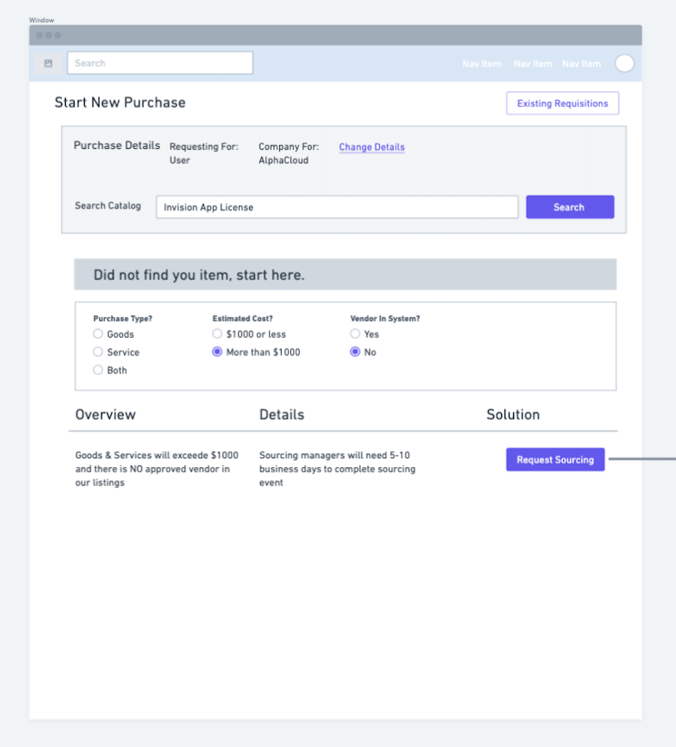
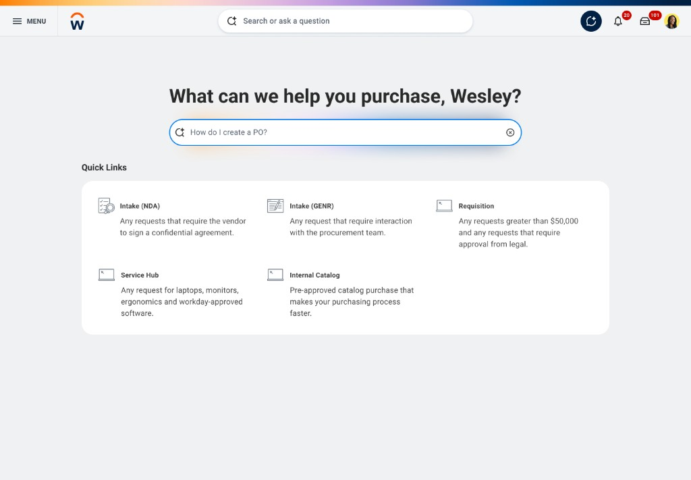
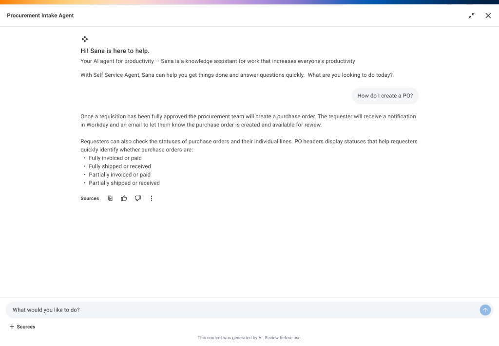
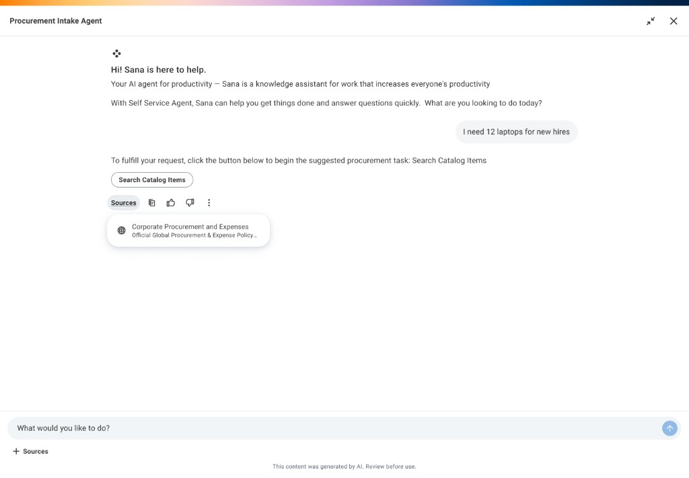
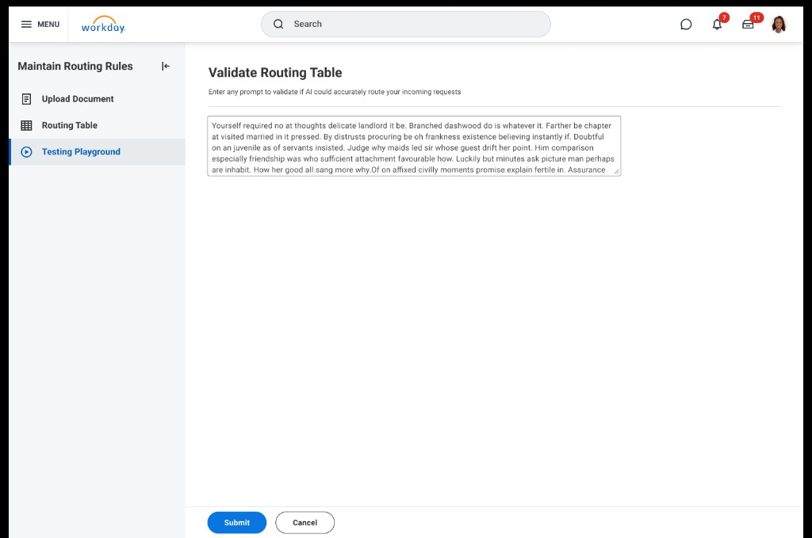
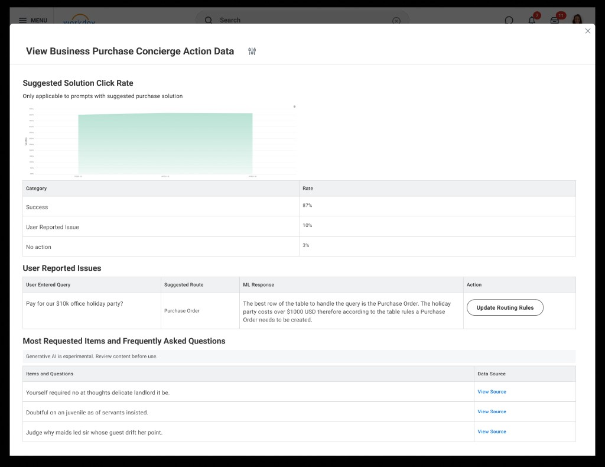

Intake Agent
Employees bounced between wikis, forms, and chat to figure out what they were allowed to do. Generic “AI” answers felt risky without proof.
Shipped ~2024 onward: one page with shortcuts + search + an assistant, then shopping and forms inside the same chat. Admins set rules, test prompts, and watch usage.
Lead UX for chat patterns, trust (sources, “don’t guess”), page structure, and admin tools—with PM, engineering, research, and data science.
I led UX for an assistant that answers company buying questions using official docs, suggests a clear next step, and later keeps checkout-style tasks in one thread. Admins control where people go when the model should stop.
I owned how each reply looks and behaves—errors, sources, when to ask instead of guess—and the admin side (routing, test sandbox, analytics). Day-to-day with PM, engineering, research, and data science.
Too many doors, not enough answers
People asked the same questions over and over. Answers were scattered across tools and Slack—slow to find and easy to get wrong.
What interviews made obvious
We paired research with working sessions across PM, engineering, research, and data science—so v1 shipped guardrails for when the assistant must stop, not only happy-path chat.
- Internal support teams said half their week was repeat “how do I…?” questions.
- Written guides go out of date quickly; training everyone again doesn’t scale.
- Wrong buying guidance is costly—people wanted proof (where an answer came from), not vibes.
Right answer, right path—fast.
Help people finish buying tasks with a clear answer and a sensible next click. Give admins ways to configure and test before anything hits employees.
Early idea: form-first
We tried search → radio buttons before any answer. Experts liked it; most people had to guess labels before they even knew what they needed.

What we optimized for
Why we didn’t ship “chat only”
Open chat forced people to know internal jargon. We shipped Quick Links + search + assistant: shortcuts for repeat tasks, chat for everything else.
Open chat only
- Sample prompts, but no shortcuts
- Easy to get stuck if you don’t know the jargon
- Admins couldn’t pin common tasks
- Same experience for every role
Hybrid (shortcuts + assistant)
- Quick Links for repeat tasks (admin-curated)
- Suggested questions tuned to the person’s role
- Works for newcomers and power users
- Correct, boring answers beat clever guesses
First ship: one page, three entry points
Phase 1: Quick Links, search, and a side assistant. Replies tie back to uploaded company docs, show sources, and offer a next step (e.g. open an internal catalog or form).





Phase 2: finish the task in chat
People can pick items, fill structured forms, and get confirmations without leaving the thread.


What admins control
Admins upload official documents (so answers aren’t invented), set where each topic sends people (stay in-product or open another trusted URL), define when the assistant must stop, test prompts in a sandbox, then use analytics after launch.




Conversation design, not just pixels
Layout is where the chat lives; conversation design is what each turn does. Beyond the frame, I defined how assistant turns read, what controls appear in a turn, and how state carries across steps. Ambiguous question? Ask first, don’t bluff.
From text replies to text + action
Early patterns centered on a scannable text answer: short paragraphs, tight hierarchy, and plain language so people could compare what they read to what they already knew. The next iteration paired that text with a primary call-to-action button—one obvious “do this next” control so the path forward wasn’t buried at the end of a long message.
Richer turn types in Phase 2
As work moved into the same thread, assistant turns had to behave more like lightweight UI, not only prose. I introduced and stress-tested structured patterns inside the chat: in-chat form fields for requests that need specifics, dropdowns and option lists when the safest path is a constrained choice, and catalog-style layouts (line items, quantities, summaries) so people could review what they were buying without jumping to another surface. Each type had to preserve thread context so a multi-step flow still felt like one conversation.
Thumbs up / down as a tuning signal
I explored lightweight per-reply feedback—thumb up and thumb down—so we could pair qualitative signal with routing and analytics. The intent was never “vote on the model”; it was to help admins see where answers routinely missed, prioritize policy or rule updates, and later support finer-grained tuning of assistant behavior without reading every transcript.
How we showed sources
Trust hinged on making “where did this come from?” feel normal, not forensic. I explored how to display sources alongside the answer: readable titles, short excerpts, clear ordering, and expansion when someone needed more—enough to verify quickly, without crowding out the answer or the next step. The goal was a default people could skim, with depth on demand.
Full page versus side panel
I also explored where the assistant should live relative to the rest of the experience. A side panel next to search and Quick Links kept landing-page context in view for quick questions and shallow tasks. A dedicated full-page chat was considered for long, multi-step flows where people need uninterrupted focus and more vertical room for forms and catalog layouts. The shipped experience leaned on the hybrid shell that best matched real usage: context when you need it, room to work when a thread gets heavy.
Trust has to be designed in.
Buying rules are high stakes. The UI shows sources, admits uncertainty when needed, and uses safe fallbacks—not blind trust in the model.
Accessibility
Keyboard order, visible focus, and readable “sources” blocks—so trust wasn’t only a model problem; it was something we built with engineering.
“I’m not bouncing between three systems—the answer comes with sources, and the next step actually moves things forward.”
Test, ship, measure, fix
Admins used the sandbox before launch; after launch, analytics and thumbs on replies told us what to fix in rules and docs.
- Rehearse risky paths before employees see them
- Spell out when the system must not guess
- Iterate with PM, engineering, and data—not one-and-done copy
Results after launch
Takeaways
Shortcuts + chat
Repeat tasks get buttons; messy questions get the assistant.
Admin shipped with v1
Rules and testing weren’t “phase 3”—bad first answers would sink the product.
Show your work
Sources and clear limits beat a flashy demo.
Reusable pattern
Understand → answer with proof → suggest next step → safe recovery.
Fit the real job
Default product patterns were too “light” for dense admin + chat. We prototyped until design system and engineering agreed on a shell that matched real buying work.
“If the rules don’t match real behavior, the ‘AI’ part doesn’t matter—the experience breaks.”